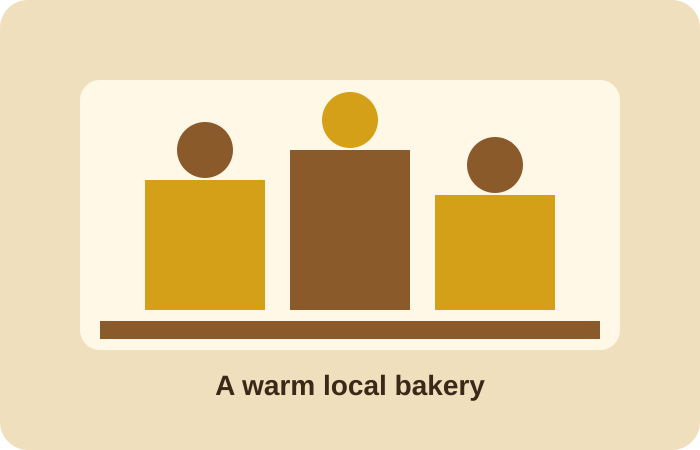

Mission
To give customers fresh, tasty and affordable baked goods while providing great customer service in a friendly place.
About the bakery
Golden Crust Bakery is a small Johannesburg bakery focused on quality baked goods and friendly customer service.
Golden Crust Bakery started in 2024 with the goal of providing fresh baked products made with quality ingredients. It began as a small local business and has grown through good customer service, fresh products and custom cakes for birthdays, weddings and other celebrations.

To give customers fresh, tasty and affordable baked goods while providing great customer service in a friendly place.
To become one of Johannesburg’s most trusted local bakeries by selling quality products, building strong relationships and growing our services to more communities.
Freshness, quality, affordability, customer service and care for our local community.
Who we serve